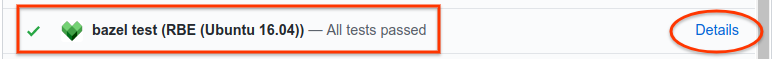
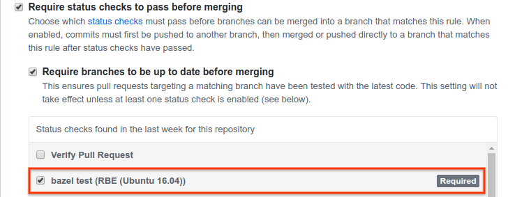

Configuring Bazel CI to Test Bazel Rules for Remote Execution
- Overview
- Prerequisites
- Setting up the Bazel CI for testing
- Troubleshooting failed builds and tests
- Using a custom container in the
rbe_ubuntu1604CI config
Overview
This document is for owners and maintainers of Bazel rule repositories. It describes how to configure the Bazel Continuous Integration (CI) system for your repository to test your rules for compatibility against a remote execution scenario. The instructions in this document apply to projects stored in GitHub repositories.
Prerequisites
Before completing the steps in this document, ensure the following:
- Your GitHub repository is part of the Bazel GitHub organization.
- You have configured Buildkite for your repository as described in Bazel Continuous Integration.
Setting up the Bazel CI for testing
-
In your
.bazelci/presubmit.ymlfile, do the following:a. Add a config named
rbe_ubuntu1604.b. In the
rbe_ubuntu1604config, add the build and test targets you want to test against remote execution. -
Add the
bazel-toolchainsGitHub repository to yourWORKSPACEfile, pinned to the latest release. -
Send a pull request with your changes to the
presubmit.ymlfile. (See example pull request.) -
To view build results, click Details for the RBE (Ubuntu 16.04) pull request check in GItHub, as shown in the figure below. This link becomes available after the pull request has been merged and the CI tests have run. (See example results.)

-
(Optional) Set the bazel test (RBE (Ubuntu 16.04)) check as a test required to pass before merging in your branch protection rule. The setting is located in GitHub in Settings > Branches > Branch protection rules, as shown in the following figure.

Troubleshooting failed builds and tests
If your build or tests fail, it’s likely due to the following:
-
Required build or test tools are not installed in the default container. Builds using the
rbe_ubuntu1604config run by default inside anrbe-ubuntu16-04container, which includes tools common to many Bazel builds. However, if your rules require tools not present in the default container, you must create a custom container based on therbe-ubuntu16-04container and include those tools as described later in this document. -
Build or test targets are using rules that are incompatible with remote execution. See Adapting Bazel Rules for Remote Execution for details about compatibility with remote execution.
Using a custom container in the rbe_ubuntu1604 CI config
The rbe-ubuntu16-04 container is publicly available at the following URL:
http://gcr.io/cloud-marketplace/google/rbe-ubuntu16-04
You can pull it directly from Container Registry or build it from source. The next sections describe both options.
Before you begin, make sure you have installed gcloud, docker, and git.
If you are building the container from source, you must also install the latest
version of Bazel.
Pulling the rbe-ubuntu16-04 from Container Registry
To pull the Pull the rbe-ubuntu16-04 container
from Container Registry, run the following command:
gcloud docker -- pull gcr.io/cloud-marketplace/google/rbe-ubuntu16-04@sha256:<sha256-checksum>
Replace <sha256-checksum> with the SHA256 checksum value for
the latest container.
Building the rbe-ubuntu16-04 container from source
To build the rbe-ubuntu16-04 container from source, do the following:
-
Clone the
bazel-toolchainsrepository:git clone https://github.com/bazelbuild/bazel-toolchains -
Set up toolchain container targets and build the container as explained in Toolchain Containers.
-
Pull the freshly built container:
gcloud docker -- pull gcr.io/<project-id>/<custom-container-name>@sha256:<sha256-checksum>
Running the custom container
To run the custom container, do one of the following:
-
If you pulled the container from Container Registry, run the following command:
docker run -it gcr.io/cloud-marketplace/google/rbe-ubuntu16-04@sha256:<sha256-checksum> /bin/bashReplace
sha256-checksumwith the SHA256 checksum value for the latest container. -
If you built the container from source, run the following command:
docker run -it gcr.io/<project-id>/<custom-container-name>@sha256:<sha256sum> /bin/bash
Adding resources to the custom container
Use a Dockerfile or
rules_docker to add resources or
alternate versions of the original resources to the rbe-ubuntu16-04 container.
If you are new to Docker, read the following:
For example, the following Dockerfile snippet installs <my_tool_package>:
FROM gcr.io/cloud-marketplace/google/rbe-ubuntu16-04@sha256:<sha256-checksum>
RUN apt-get update && yes | apt-get install -y <my_tool_package>
Pushing the custom container to Container Registry
Once you have customized the container, build the container image and push it to Container Registry as follows:
-
Build the container image:
docker build -t <custom-container-name> .docker tag <custom-container-name> gcr.io/<project-id>/<custom-container-name> -
Push the container image to Container Registry:
gcloud docker -- push gcr.io/<project-id>/<custom-container-name> -
Navigate to the following URL to verify the container has been pushed:
https://console.cloud.google.com/gcr/images/<project-id>/GLOBAL/<custom-container-name> -
Take note of the SHA256 checksum of your custom container. You will need to provide it in your build platform definition later in this document.
-
Configure the container for public access as described in publicly accessible as explained in Serving images publicly.
For more information, see Pushing and Pulling Images.
Specifying the build platform definition
You must include a Bazel platform configuration in your
custom toolchain configuration, which allows Bazel to select a toolchain
appropriate to the desired hardware/software platform. See this
example platform configuration
for the TensorFlow ubuntu16-04 container.
Create a similar configuration (that is, using the same constraints) but replace
the value of the container-image property with the name of your custom
container, as well as your GCR project ID and container image checksum. For
example:
docker://gcr.io/<project-id>/<custom-container-name> @sha256:<sha256sum>
Once you have created a BUILD file with the platform rule, place it within
your project tree. For example, /platforms/BUILD.
Configuring Buildkite
Add the appropriate build_flag and test_flag entries to the
.bazelci/presubmit.yml file in your rbe_ubuntu1604 config to switch your
builds to using your custom container.
See example.
Note: The example linked above uses a platform definition from the
@bazel_toolchains repo. If your platform rule is in /platforms/BUILD, the
entries would look as follows:
"--extra_execution_platforms=//platforms:<your_platform_target>"
"--host_platform=//platforms:<your_platform_target>"
"--platforms=//platforms:<your_platform_target>"